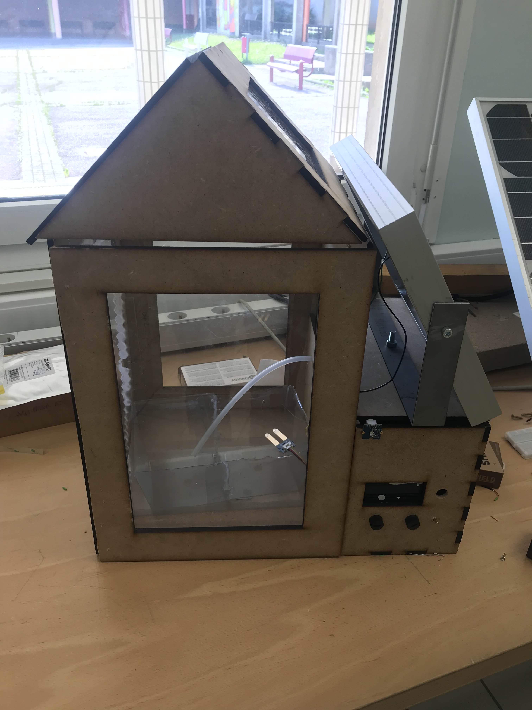

Projet de Lycée
Au cours d'un projet nous devions réaliser moi et mon groupe une serre autonome capable d'arroser, de géré la temperature et l'éclairage de plantes aromatiques, qui est alimenté par un panneau solaire.
Outils utilisé
- Inventor : pour la construction de la sert qui a ensuite etait fait de plusieur plaque en bois d'écouper à la machine laser
- Arduino IDE : pour coder en C++ et gerer tout les capteur et agir en fonction des résultat
- Une carte arduino uno avec plusieur capteur et composant éléctronique
